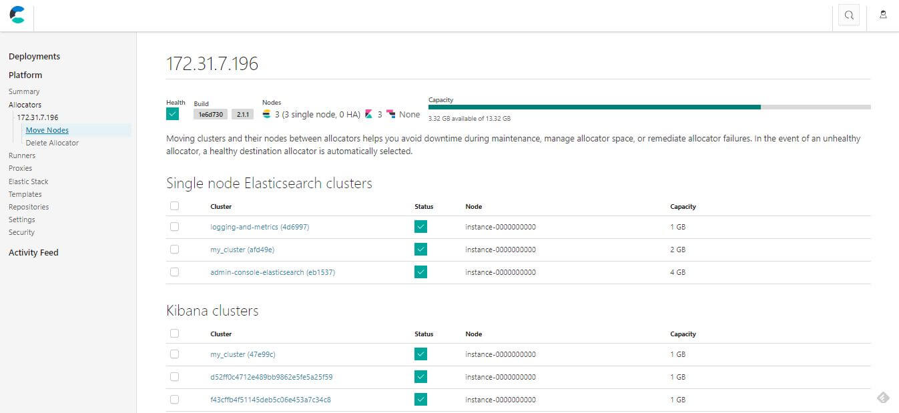
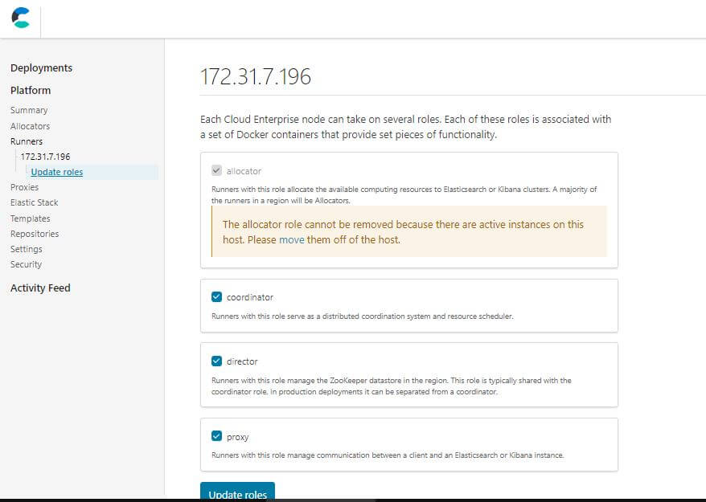
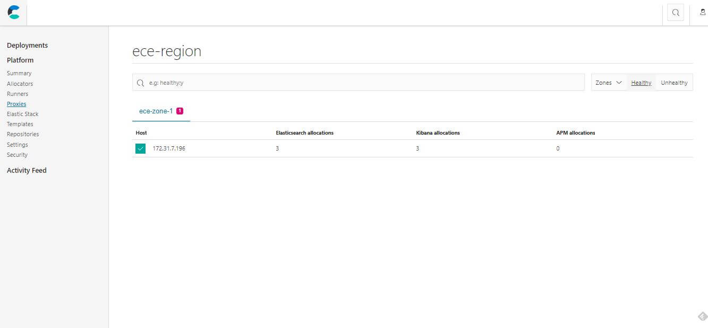
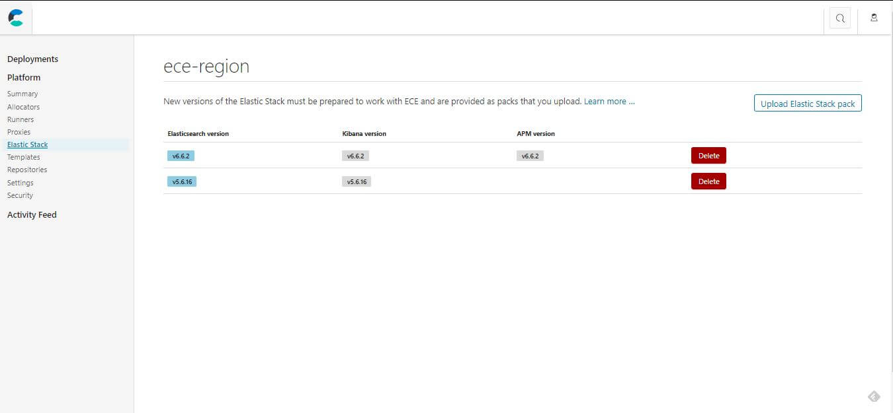
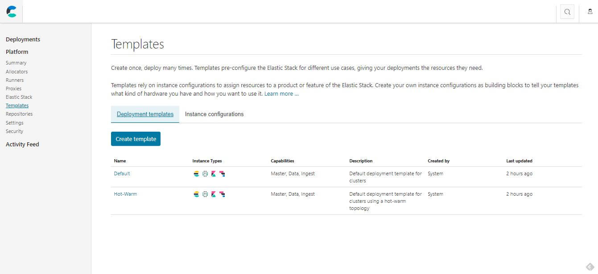
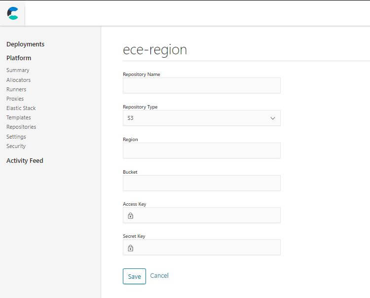
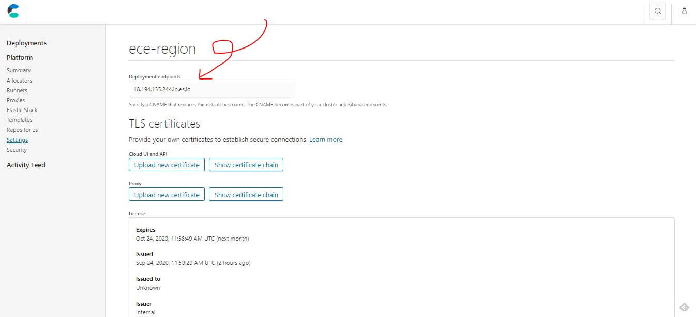
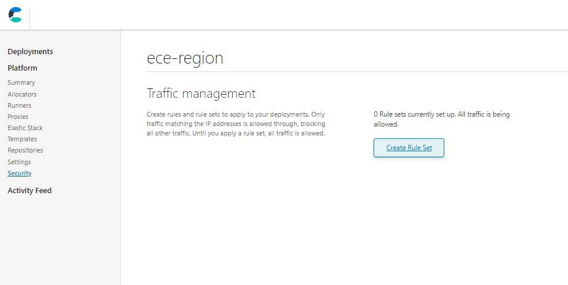
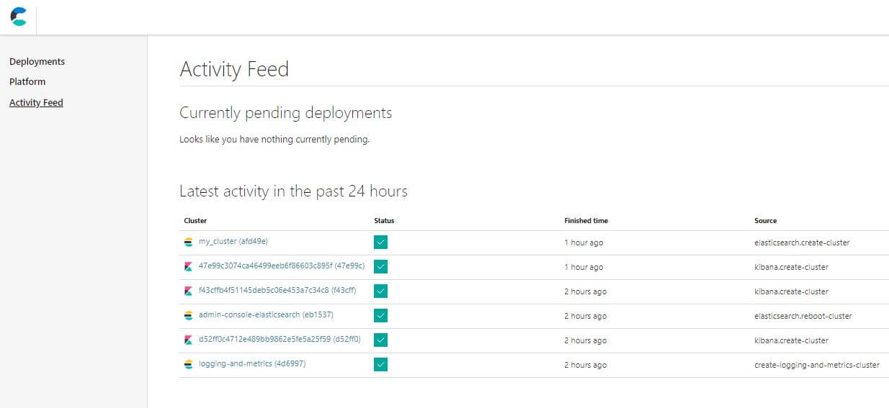

Elastic Cloud Enterprise Architecture
這篇文章會分享第一次看到 Elastic Cloud Enterprise 架構的心得及如何透過 ECE 主控台介面 (Cloud UI) 做平台管理及架構設定。
Elastic Cloud Enterprise 是 Elastic Stack 雲端企業用的版本，提供了較完整的服務導向系統架構，還有完整的配置建議教學，減少了較沒經驗的工程師在增修了系統配置後反而更加不穩定的問題。
為什麼使用 Elastic Cloud Enterprise 而不自己管理?
- 減少部屬跟管理硬體架構的成本，像是管理網路、防火牆、硬碟狀況等等
- 用 docker 最大化硬體機台的使用率，隔離資源避免 Split Brains 這類問題
- 提供安全性、HA 的保證，減少因為一個服務沒處理好就整台機器掛掉的風險
- 能夠集中管理散布在各地的服務
ECE Features
- 服務都以 docker 容器的方式提供
- 透過多個 Availability Zones 做到 HA
- 透過 ZooKeeper 管理協調節點部屬的狀態
- 透過 API 或是網頁版 GUI 可以很方便的操作管理
- 支援離線安裝
- 系統還原或是快照功能
Roles and Runners
每台機器上會有一個 Runners 負責控管每一台機器，確保所有的容器都是正常健康運作的，Runner 會被給予多個角色，每個角色則會對應到不同的容器，有不同的權限及用途。
- Proxy Role，處理使用者請求，確保相關靜態資源的可存取狀態，協助不停機升級或擴充
- Allocator Role，負責把所有節點上的服務跑起來，負責產生新的容器並啟動節點
- Coordinator Role，負責 constructor，協調系統資源與排程
- Director Role，管理 ZooKeeper，只要被 assign 那台機器上面就會跑 Zookeeper 的服務，且服務不會因為角色移除而消失
ECE Platforms 系統架構
系統架構圖如下，可以看到每台機器上都會有一個 Runner，每個服務都會部屬在各自的 docker container 裡，幾個主要區塊如下
- Load balancers: 附載平衡負責導流
- Proxies: 監控每個 availability zones 是否健康，通常會在附載平衡後面接好幾個確保 Proxy 穩定
- Allocators: 管理節點上的站台服務，每個節點上服務的 CRUD
- Control Plane: 負責管理整個架構的核心
- ZooKeeper，分散式系統中確保文件寫入一致性，用來存放 ECE 元件部屬狀態與所需的配置資訊維護像是 Proxy 的 Routing Table，會透過 STunnel 跟 ECE 元件們傳遞訊息溝通。
- Director: 管理 ZooKeeper
- Constructor: 排程與監控，當有相關狀態改變就要即時寫入 ZooKeeper，也負責分配節點到不同的 availability zones 確保服務可用性
- Cloud UI and API: API 相關管理
系統架構圖

介紹了 Elastic Cloud Enterprise 的架構後，接下來會介紹透過 ECE 主控台介面 (Cloud UI) 做平台管理及設定，下一篇文章會介紹較進階的部屬樣板使用方式。Cloud UI 中的 Platforms 主要顯示與管理系統架構中各節點的健康狀況。一套完整的架構除了 Load Balancers 都能夠在 Platforms 中進行健康狀況的監控與配置，包含了以下相關選單
- Allocators
- Runners
- Proxies
- Elastic Stack
- Templates
- Repository
- Setting
- Security
Platforms Allocators
移動節點的功能，當我們發現某個 Cluster 中的健康狀況出問題或機器正在升級維護時，就能夠透過這個功能先把節點移動到其他的 Cluster 中來減少停機的時間。
移動或刪除 Allocators

Platforms Runners
Runners 是每台機器管理者，會管理多種角色，角色則會對應管理不同的容器服務，確保所有對應到該角色的容器服務都是健康的。
- Proxy Role，處理使用者請求，確保相關靜態資源的可存取狀態，協助不停機升級或擴充
- Allocator Role，負責把所有節點上的服務跑起來，負責產生新的容器並啟動節點
- Coordinator Role，負責 constructor，協調系統資源與排程
- Director Role，管理 ZooKeeper，只要被 assign 那台機器上面就會跑 Zookeeper 的服務，且服務不會因為角色移除而消失
管理每個 Runners 的角色

Platforms Proxy
查看目前 Proxy 設定的狀況，這個部分還沒有開到多個 Availablity Zone 所以還沒深入研究。
Proxy 狀態列表

Platforms ElasticStack
這一頁蠻單純的，每個 Deployment 中的 Elastic Stack 版本與內容列表。
Elastic Stack 版本與內容列表

Platforms Templates
提供部屬用的樣版，可以去設定每台機器是不是需要 highCPU 或是 SSD 等等的服務配置，像是儲存用的服務可能就不需要 SSD，記憶體與儲存空間的比例也可以設定到 1:48 ~ 1:96 等等相關配置。
樣板管理介面

Platforms Repository
要啟用快照功能一定要先配置 Repository，詳細介紹可以參考前一篇文章。
Repository 配置

Platforms Security And Setting
Platforms 相關設定與主控台安全管理，比較重要的是 Endpoints IP 或網域記得要設定正確，然後相關的 TLS 憑證可以在這裡匯入，主控台安全可以透過鎖 IP 的方式進行控管，只讓相關人員能夠進到這個管理介面。
Platforms 相關設定

IP 設定

Load Balancers
值得注意的是 Load Balancers 沒有包含在 ECE 裡面，因為 ECE 的架構中是包含這樣的設計，所以還是建議自行安裝像是 Nginx 這樣的工具，相關基礎配置也可以參考這篇介紹 nginx 的文章，裝上去之後就可以直接解決 C10K 的問題，每個 Availablity Zone 都至少配兩個 Load Balancers 來做到 HA，HA 的詳細概念與實作會在下一篇文章跟大家分享。
Activity
最後一個頁面其實是 Activity，可以看出是否有哪些節點已經閒置很久沒有使用，查看活動的狀態。
結點活動狀態

心得與結論
過去的經驗有直接架過包含附載平衡的實體主機、用過 Azure App service 服務和虛擬機、Aws 開虛擬機搭配部分服務，底下分享一些使用過的優缺點跟心得。
- 若買過 MS 版權軟體，實體機買斷長期較便宜，花同樣錢雲端開到同規格會比較貴
- 雲端服務大多提供快照、快速恢復的功能
- 實體機較容易遇到道路施工挖電纜影響，以前就至少遇過兩次服務需要中斷一點時間的狀況
- DDoS 等攻擊實體機需要透過配置防範，雲端大多有整合相關服務
- 實體機擴充較不容易，雲端服務可幾分鐘內完成可擴充彈性大，早期就遇過硬碟最大才 2T，每過一段時間，資料庫都要定期移轉資料到其他機台的狀況
- 如果套用了一些雲端微服務，可能會造成系統架構更複雜難懂，按照教學用了不太懂的服務後帳單突然變很貴，我之前同事就遇過但還好一周內發現，寄信給 AWS 後有退款成功
會適合用實體機自建的狀況:
- 本來公司就有購買主機、相關版權，像之前公司有買高級 NAS，拿來架 WordPress 官網前面掛個 Cloudfare 其實很夠用
- 公司有 MIS、維運團隊、架構師
會適合用雲端服務的狀況:
- 團隊較小，產品還沒穩定營利前
- 第一次申請完全可以先只用免費的額度，早期 Azure 還有新創方案超便宜
喜歡這篇文章，請幫忙拍拍手喔 🤣